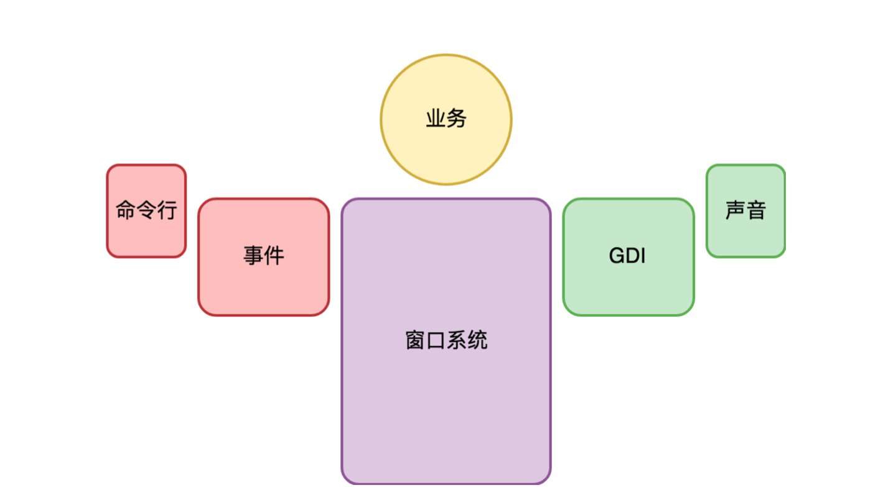
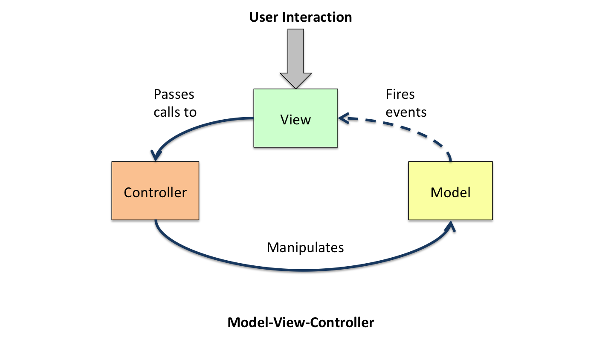
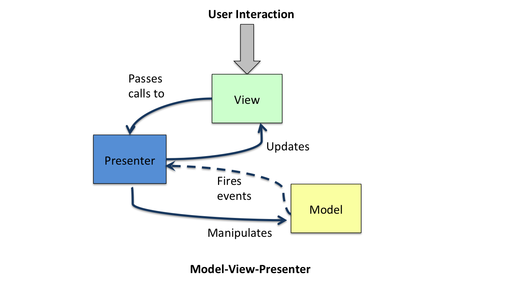
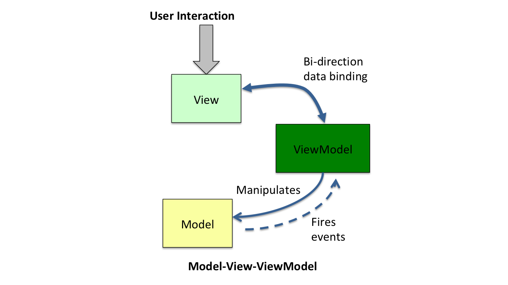

- 00 开篇词 怎样成长为优秀的软件架构师？.md
- 01 架构设计的宏观视角.md
- 02 大厦基石：无生有，有生万物.md
- 03 汇编：编程语言的诞生.md
- 04 编程语言的进化.md
- 05 思考题解读：如何实现可自我迭代的计算机？.md
- 06 操作系统进场.md
- 07 软件运行机制及内存管理.md
- 08 操作系统内核与编程接口.md
- 09 外存管理与文件系统.md
- 10 输入和输出设备：交互的演进.md
- 11 多任务：进程、线程与协程.md
- 12 进程内协同：同步、互斥与通讯.md
- 13 进程间的同步互斥、资源共享与通讯.md
- 14 IP 网络：连接世界的桥梁.md
- 15 可编程的互联网世界.md
- 16 安全管理：数字世界的守护.md
- 17 架构：需求分析 (上).md
- 18 架构：需求分析 (下) · 实战案例.md
- 19 基础平台篇：回顾与总结.md
- 20 桌面开发的宏观视角.md
- 21 图形界面程序的框架.md
- 22 桌面程序的架构建议.md
- 23 Web开发：浏览器、小程序与PWA.md
- 24 跨平台与 Web 开发的建议.md
- 25 桌面开发的未来.md
- 26 实战（一）：怎么设计一个“画图”程序？.md
- 27 实战（二）：怎么设计一个“画图”程序？.md
- 28 实战（三）：怎么设计一个“画图”程序？.md
- 29 实战（四）：怎么设计一个“画图”程序？.md
- 30 实战（五）：怎么设计一个“画图”程序？.md
- 31 辅助界面元素的架构设计.md
- 32 架构：系统的概要设计.md
- 33 桌面开发篇：回顾与总结.md
- 34 服务端开发的宏观视角.md
- 35 流量调度与负载均衡.md
- 36 业务状态与存储中间件.md
- 37 键值存储与数据库.md
- 38 文件系统与对象存储.md
- 39 存储与缓存.md
- 40 服务端的业务架构建议.md
- 41 实战（一）：“画图”程序后端实战.md
- 42 实战（二）：“画图”程序后端实战.md
- 43 实战（三）：“画图”程序后端实战.md
- 44 实战（四）：“画图”程序后端实战.md
- 45 架构：怎么做详细设计？.md
- 46 服务端开发篇：回顾与总结.md
- 47 服务治理的宏观视角.md
- 48 事务与工程：什么是工程师思维？.md
- 49 发布、升级与版本管理.md
- 50 日志、监控与报警.md
- 51 故障域与故障预案.md
- 52 故障排查与根因分析.md
- 53 过载保护与容量规划.md
- 54 业务的可支持性与持续运营.md
- 55 云计算、容器革命与服务端的未来.md
- 56 服务治理篇：回顾与总结.md
- 57 心性：架构师的修炼之道.md
- 58 如何判断架构设计的优劣？.md
- 59 少谈点框架，多谈点业务.md
- 60 架构分解：边界，不断重新审视边界.md
- 61 全局性功能的架构设计.md
- 62 重新认识开闭原则 (OCP).md
- 63 接口设计的准则.md
- 64 不断完善的架构范式.md
- 65 架构范式：文本处理.md
- 66 架构老化与重构.md
- 67 架构思维篇：回顾与总结.md
- 68 软件工程的宏观视角.md
- 69 团队的共识管理.md
- 70 怎么写设计文档？.md
- 71 如何阅读别人的代码？.md
- 72 发布单元与版本管理.md
- 73 软件质量管理：单元测试、持续构建与发布.md
- 74 开源、云服务与外包管理.md
- 75 软件版本迭代的规划.md
- 76 软件工程的未来.md
- 77 软件工程篇：回顾与总结.md
- 加餐 如何做HTTP服务的测试？.md
- 加餐 实战：“画图程序” 的整体架构.md
- 加餐 怎么保障发布的效率与质量？.md
- 热点观察 我看Facebook发币（上）：区块链、比特币与Libra币.md
- 热点观察 我看Facebook发币（下）：深入浅出理解 Libra 币.md
- 用户故事 站在更高的视角看架构.md
- 答疑解惑 想当架构师，我需要成为“全才”吗？.md
- 结束语 放下技术人的身段，用极限思维提升架构能力.md
- 课外阅读 从《孙子兵法》看底层的自然法则.md
22 桌面程序的架构建议
你好，我是七牛云许式伟。
上一讲我们介绍了图形界面程序的框架。站在操作系统交互子系统的角度来看，我们桌面应用程序的结构是下面这样的。

今天我们换一个角度，站在应用架构的角度，来聊聊如何设计一个桌面应用程序。
从 MVC 说起
关于桌面程序，我想你听得最多的莫过于 MVC 这个架构范式。MVC 全称是 “模型(Model)-视图(View)-控制器(Controller)”。

- 怎么理解 MVC 呢？一种理解是，Model 是 Input，View 是 Output，Controller 是 Process，认为 MVC 与计算机的 Input-Process-Ouput 这个基础模型暗合。但更准确的解释是：Model 是数据，View 是数据的显示结果，同时也接受用户的交互动作，也就是事件。从这个意义来说，说 Model 是 Input 并不严谨，View 接受的用户交互，也是 Input 的一部分。
Controller 负责 Process（处理），它接受 “Model + 由 View 转发的事件” 作为 Input，处理的结果（Output）仍然是 Model，它更新了 Model 的数据。
View 之所以被理解为 Output，是因为 Model 的数据更新后，会发送 DataChanged（数据更新）事件，View 会在监听并收到 DataChanged 事件后，更新 View。所以把 View 理解为 Output 也并不算错，它从数据角度看其实是 Model 的镜像。
对 MVC 模式做些细微的调整，就会产生一些变种。比如，Model 的数据更新发出 DataChanged 事件后，由 Controller 负责监听并 Update View，这样就变成了 MVP 架构。MVP 全称是 “模型(Model)-视图(View)-表现(Presenter)”。

那么，我们究竟应该选择哪一种架构范式比较好？
要想判断我们写的程序架构是否优良，那么我们心中就要有架构优劣的评判标准。比较知名且重要的一些基本原则如下。
- 最低耦合原则：不同子系统（或模块）之间有最少的交互频率，最简洁且自然的接口。
- 单一职责原则：不要让一个子系统（或模块）干多件事情，也不要让它不干事情。
如果在我们心中以遵循架构法则为导向，回过头再来看 MVC，又会有不同的理解。
理解 Model 层
我们先看 Model。如果你真正理解 Model 层的价值，那么可以认为你的架构水平已经达到了较高层次的水准。因为 Model 层太重要了。
我上面说 Model 层是数据，这其实还不是太准确。更准确来说，Model 层是承载业务逻辑的 DOM，即 “文档对象模型（Document Object Model）”。直白理解，DOM 是 “面向对象” 意义上的数据。它不只是有数据结构，也有访问接口。
为了便于理解，假设我们基于数据库来实现 Model 层。** 这种情况下会有两种常见的架构误区。**
一种是直接让 Controller 层直接操作数据库，也就是拿数据库的读写接口作为 Model 层的接口。
另一种看起来高级一些，用所谓的 ORM 技术来实现 Model 层，让 Controller 直接操作 ORM。
为什么我们说这两种做法都有问题呢？原因就在于对 Model 层的价值不明。Model 层的使用接口最重要的是要自然体现业务的需求。
只有这样，Model 层的边界才是稳定的，与你基于的技术无关。是用了 MySQL，还是用了 NoSQL？是直接裸写 SQL 语句，还是基于 ORM？这都没关系，未来喜欢了还可以改。
另外，从界面编程角度看，Model 层越厚越好。为什么这么说？因为这是和操作系统的界面程序框架最为无关的部分，是最容易测试的部分，也同时是跨平台最容易的部分。
我们把逻辑更多向 Model 层倾斜，那么 Controller 层就简洁很多，这对跨平台开发将极其有利。
这样来看，直接让 Controller 层直接操作数据库，或者基于 ORM 操作数据库，都是让 Model 层啥事不干，这非常非常浪费，同样也违背了 “单一职责原则”。
我们需要强调，单一职责不只是要求不要让一个子系统（或模块）干多件事情，同时也要求不要让它不干事情。
如果我们用一句话来描述 Model 层的职责，那么应该是 “负责业务需求的内核逻辑”，我们以前经常叫它 “DataCore”。
那么 Model 层为何要发出 DataChanged 事件？
这是从 Model 层的独立性考虑。Model 层作为架构的最底层，它不需要知道其他层的存在，不需要知道到底是 MVC 还是 MVP，或者是其他的架构范式。
有了 DataChanged 事件，上层就能够感知到 Model 层的变化，从而作出自己的反应。
如果还记得第一章我们反复强调的稳定点与变化点，那么显然，DataChanged 事件就是 Model 层面对需求变化点的对策。大部分 Model 层的接口会自然体现业务需求，这是核心价值点，是稳定的。
但是业务的用户交互可能会变化多端，与 PC 还是手机，与屏幕尺寸，甚至可能与地区人文都有关系，是多变的。
用事件回调来解决需求的变化点，这一点 CPU 干过，操作系统也干过，今天你做业务架构也这么干，这就很赞。
理解 View 层
View 层首要的责任，是负责界面呈现。界面呈现只有两个选择，要么自己直接调用 GDI 接口自己画，要么创建子 View 让别人画。
View 层另一个责任是被自然带来的，那就是：它是响应用户交互事件的入口，这是操作系统的界面编程框架决定的。比较理想的情况下，View 应该把自己所有的事件都委托（delegate）出去，不要自己干。
但在 View 的设计细节中，也有很多问题需要考虑。
其一，View 层不一定会负责生成所有用户看到的 View。 有的 View 是 Controller 在做某个逻辑的过程中临时生成的，那么这样的 View 就应该是 Controller 的一部分，而不应该是 MVC 里面的 View 层的一部分。
其二，View 层可能需要非常友好的委托（delegate）机制的支持。 例如，支持一组界面元素的交互事件共同做委托（delegate）。
其三，负责界面呈现，意味着 View 层和 Model 层的关系非常紧密，紧密到需要知道数据结构的细节，这可能会导致 Model 层要为 View 层提供一些专享的只读访问接口。 这合乎情理，只是要确保这些访问接口不要扩散使用。
其四，负责界面呈现，看似只是根据数据绘制界面，似乎很简单，但实则不简单。 原因在于：为了效率，我们往往需要做局部更新的优化。如果我们收到 onPaint 消息，永远是不管三七二十一，直接重新绘制，那么事情就很好办。但是在大部分情况下，只要业务稍微复杂一点，这样的做法都会遇到性能挑战。
在局部更新这个优化足够复杂时，我们往往不得不在 Model 和 View 之间，再额外引入一层 ViewModel 层来做这个事情。
ViewModel 层顾名思义，是为 View 的界面呈现而设计的 Model 层，它的数据组织更接近于 View 的表达，和 View 自身的数据呈一一对应关系（Bidi-data-binding）。-

- 一个极端但又很典型的例子是 Word。它是数据流式的文档，但是界面显示人们用得最多的却是页面视图，内容是分页显示的。这种情况下就需要有一个 ViewModel 层是按分页显示的结构来组织数据。其中负责维持 Model 与 ViewModel 层的数据一致性的模块，我们叫排版引擎。
从理解上来讲，我个人会倾向于认为 ViewModel 是 View 层的一部分，只不过是 View 层太复杂而进行了再次拆分的结果。也就是说，我并不倾向于认为存在所谓的 “Model-View-ViewModel” 这样的模式。
理解 Controller 层
Controller 层是负责用户交互的。可以有很多个 Controller，分别负责不同的用户交互需求。
这和 Model 层、View 层不太一样。我们会倾向于认为 Model 层是一个整体。虽然这一个层会有很多类，但是它们共同构成了一个完整的逻辑：DOM。而 View 层也是如此，它是 DOM 的界面呈现，是 DOM 的镜像，同样是一个整体。
但负责用户交互的 Controller 层，是可以被正交分解的，而且应该作正交分解，彼此完全没有耦合关系。
一个 Controller 模块，可能包含一些属于自己的辅助 View，也会接受 View 层委托的一些事件，由事件驱动自己状态，并最终通过调用 Model 层的使用接口来完成一项业务。
Controller 模块的辅助 View 可能是持续可见的，比如菜单和工具条；也可能是一些临时性的，比如 Office 软件中旋转图形的控制点。
对于后者，如果存在 ViewModel 层的话，也有可能会被归到 ViewModel + View 来解决，因为 ViewModel 层可以有 Selection 这样的东西来表示 View 里面被选中的对象。
Controller 层最应该思考的问题是代码的内聚性。哪些代码是相关的，是应该放在一起的，需要一一理清。这也是我上面说的正交分解的含义。
如果我们做得恰当，Controller 之间应该是完全无关的。而且要干掉某一个交互特别容易，都不需要删除该 Controller 本身相关的代码，只需要把创建该 Controller 的一行代码注释掉就可以了。
从分层角度，我们会倾向于认为 Model 层在最底层；View 层在中间，它持有 Model 层的 DOM 指针；Controller 层在最上方，它知道 Model 和 View 层，它通过 DOM 接口操作 Model 层，但它并不操作 View 去改变数据，而只是监听自己感兴趣的事件。
如果 View 层提供了抽象得当的事件绑定接口，你会发现，其实 Controller 层大部分的逻辑都与操作系统提供的界面编程框架无关（除了少量辅助 View），是跨平台的。
谁负责把 MVC 各个模块串起来呢？当然是应用程序（Application）了。 在应用开始的时候，它就把 Model 层、View 层，我们感兴趣的若干 Controller 模块都创建好，建立了彼此的关联，一切就如我们期望的那样工作起来了。
兼顾 API 与交互
MVC 是很好的模型来支持用户交互。但这不是桌面程序面临的全部。另一个很重要的需求是提供应用程序的二次开发接口（API，全称为 Application Programming Interface）。
提供了 API 的应用程序，意味着它身处一个应用生态之中，可以与其他应用程序完美协作。
通过哪一层提供 API 接口？我个人会倾向于认为最佳的选择是在 ViewModel 层。Model 层也很容易提供 API，但是它可能会缺少一些重要的东西，比如 Selection。
结语
这一讲我们探讨了一个桌面应用程序的业务架构设计。我们探讨了大家耳熟能详的 MVC 架构范式。一千个人眼中有一千个哈姆雷特，虽然都在谈 MVC，但是大家眼中的 MVC 各有不同。
我们站在什么样的架构是好架构的角度，剖析了 MVC 的每一层应该怎样去正确理解与设计，有哪些切实的问题需要去面对。
如果你对今天的内容有什么思考与解读，欢迎给我留言，我们一起讨论。下一讲我们将聊聊基于浏览器的开发。
如果你觉得有所收获，也欢迎把文章分享给你的朋友。感谢你的收听，我们下期再见。
© 2019 - 2023 Liangliang Lee. Powered by gin and hexo-theme-book.